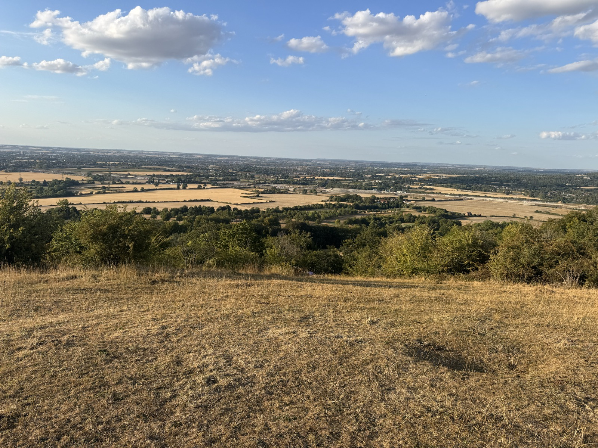

How every view was computed
This project began with one evening at Coombe Hill Monument in the Chilterns: open grass, a steep drop, and the whole Vale of Aylesbury spread out like a quilt to a hazy horizon. What makes a place feel like that — and can you find every such place in England from terrain data alone, with no ratings and no opinions?

The theory
A great view is not about absolute height. It is about angular dominance: the terrain falls away from you steeply and stays below your sightline over a wide arc, so an enormous sweep of lower country becomes visible — and stays visible for tens of kilometres. That is geometry, and geometry can be measured. Four properties recur at celebrated viewpoints:
- Drop — the ground plunges right at your feet (an escarpment edge, a lone summit);
- Openness — a wide, continuous arc of the horizon is unobstructed;
- Depth — foreground, middle ground and a far horizon are all present at once;
- Variety — the visible scene is a patchwork (fields, woods, villages, water), not a monotone.
The pipeline
- Terrain. All of Great Britain on a 50 m grid (OS Terrain 50), with ESA WorldCover land cover resampled onto the same grid. Wales and Scotland are kept as terrain so views across the border are honest; candidates are England-only.
- Screening. Multi-scale Topographic Position Index (how much a point stands above its 500 m / 2 km / 10 km surroundings) keeps the top tenth of England's cells, thinned to local maxima. Every OSM viewpoint and peak, and every surveyed hill in the Database of British and Irish Hills, is added so nothing named is missed.
- The sweep. For each of ~46,000 candidates, 720 rays are cast to 60 km with Earth curvature and atmospheric refraction. Along each ray the rising record of elevation angle determines what is visible; the record increments are the angular size of terrain in the panorama, which weights everything the way an eye would. A second pass adds trees (+15 m) and buildings (+8 m) as obstacles — crucially, woods on the slope below an escarpment edge do not block the view, while a wooded summit blocks everything.
- Scoring. Six components — prospect, openness, drop, depth, diversity, clearness — each a national percentile of raw metrics; their unweighted mean is the view potential. Equal weights are a stated convention, not a discovered law.
- Refinement. Around every promising site the algorithm walks a fine grid (down to 12.5 m steps) to find the exact best place to stand — the difference between a car park and the lip of the scarp 100 m away.
- Verification. 60 famous viewpoints (photo-verified) and 20 adversarial negative controls test the ranking; see verification.
What the score is — and is not
The score measures view geometry: how much you can see, how far, how wide, how steeply down, and how varied it is. It does not measure beauty — no algorithm can, without smuggling in someone's taste. The claim is deliberately modest and precisely testable: places that score highly have the measurable structure that famous viewpoints share. Weather, light, season, foreground furniture and the walk up are yours to judge.
Honest limitations
- 50 m terrain smooths cliffs. Gritstone edges (Stanage, Curbar) and features like Malham Cove under-score because their drama lives in the first 30 metres, below the grid's resolution. The Environment Agency's 1 m LiDAR is the planned refinement.
- Towers are scored at ground level. Leith Hill Tower and Broadway Tower earn their views on the platform; the algorithm stands on the grass.
- Trees are a model. A uniform 15 m woodland from a 10 m land-cover map, not each real hedge and copse. Winter views through bare branches don't exist here.
- The sea counts. Clifftops legitimately top the national list; the inland list on the front page is filtered for the Coombe Hill kind.
- Fame is more than geometry. Some beloved viewpoints (Lake District balconies like Latrigg) are outcompeted by every fell around them — the metric honestly reports that better geometric views exist nearby; it cannot measure the tea room.
Reproduce it
Everything — data downloads, the numba viewshed engine, scoring, verification and this site — is open source: github.com/vassiliphilippov/england-pbv. The full pipeline runs from public data in under an hour on a laptop.